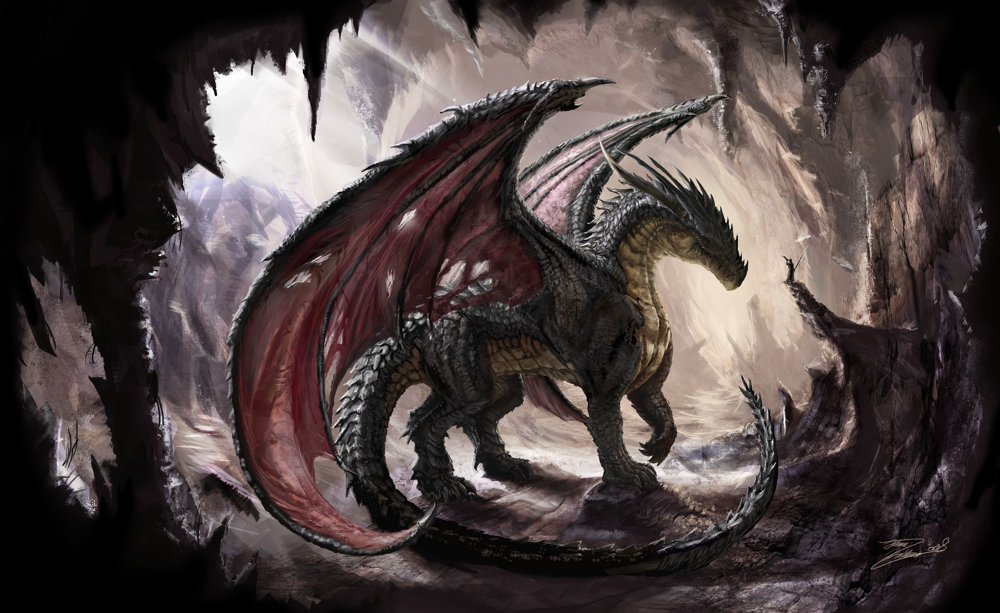

So you want to play dungeons and dragons...

What is Dungeons and Dragons?
Dungeons and Dragons often referred to as dnd or d&d is a tabletop role-playing game.
It was invented in 1974 by Gary Gygax and Dave Arneson. In dnd, you get to take on the role of someone entirely new and act out their lives in a fantasy
world where even the sky isn't a limit. It is a great way to make friend, and learn more about yourself while having a good time.
How do I get started?
This website right here is a great place to start. Here you will able to learn everything you will need before getting thrown into the fray of dnd.
All you really need to play dnd is to find a group of people you want to play with. Check the How to Find Other Players tab to go find out more about how
to find people to play with. Other than that after you read this page, click on the Character Creation tab to get started making your dnd character.
The only other thing you need is to be ready and willing to have fun. Playing your first game of dnd can be super scary because it is so complicated and
there are so many rules. But I promise that once you start you will see how easy it actually is and that the rules never really matter in the end.
Plus you have to remember the dnd is an acting and imagination game, the more into it you get the more fun it is. Just relax and try to have a good time.
Your DM(Dungeon Master) and other more experienced players will be there to answer your questions and help you at every turn.
What will I need?
The good news is that just by being on this site you have everything you need to get started playing other than some friends to play it with.
There are a few additional things you can get to help support your imagination and to make the game more interactive and fun. Getting your first set of dice
is always an exciting occasion for a new dnd player. You can find a dice simulator online, but rolling real dice is way more fun. Plus they can look really cool.
You need 7 different dice to play dnd. You need dice with the following amounts of sides: 20, 12, 10, 10(the second one is so that you can roll percentages and
up to 100) 8, 6, and 4. Don't worry I explain when each is used in playing the game section. You can find dice for fairly cheap online or in comic stores and other
large retailers. I only paid 5 dollars for my first set of dice. Of course you can also find some online. But don't worry if you don't want to make
a monetary commitment to your dnd future yet, most DMs(Dungeon Masters) will have a spare set you can use when you are starting out.
To get you adventure started all you need to do is click on the create a character tile and it will walk you through the steps of creating your dnd character.
Good Luck Adventurer!
Vocab and Some Key Terms
- Duengon Master(DM)
- This is the person who runs your campaign. They are in charge basically. They run the game, play all the villains, and set the scene. Think of them as either
the narrator or God to your game. What they say is final, and they are there to both challenge and help you.
- Campaign
- This is what players tend to refer to the current round/game you are playing. Since it takes a good amount of time to create a character many groups will play many
round/campaigns with the same characters. After every campaign your character will gain items, exp, and knowledge.
- Experience Point(Exp)
- This is the base system for how powerful your character is.
- d20
- This is the most common die you will roll while playing dnd. It is the die in your set that has 20 sides. Similarly, you may see other die referred to as d(number of sides).
- Melee
- Close combat using striking, slashing, or piercing weapons.
- Party
- This s just a name for the group of character's your character is traveling/fighting with
- Nonplayer Character (npc)
- This is someone played by the DM instead of one of the members of your party. This can be a random townfolk or even the villain.
- Home Brew
- This is something that is player-created or not part of basic dnd. This could be something as simple as having your campaign set in modern-day, or something as complex as a race/class/world.
Consult your DM if you want to do something outside of the basic rules. This is a game of pretend so many DMs are willing to make something you want to do work.
- Initiative
- The order in which players and enemies take their turns in combat. This is decided by each player and enemy rolling a d20. If two character roll the same number it is decided by their dexterity score.
- Player Hand Book(PHB)
- This is the official guide for starting dnd. Most new players find it a bit intimidating, and I hope that this website will be more user friendly, but it is another great source of info. A hard copy is recommended,
but here is a link to a pdf of it.
- Cantrip
- This is the most simple type of spell and can be cast as a bonus action without using a spell slot
- Natural 1
- When someone rolls a 1 on a d20. Also known as a critical failure and means that the DM gets to make a decision on how horribly that action backfires. If it is an attack it
ussaly will hit one of your allies or backfire and cause you damage. If it is an action, you may be clumsy and take falling damage or embarrass your character. It is up to your DM to decide.
It is usually quite funny.
- Narutal 20
- Also knows as a Nat. 20 or critical success(Crit.) this is when someone rolls a 20 on a d20.
- Hit Points
- The amount of health a player has. Damage decreases hit points and incapacitates the player at zero.
- Saving Throw
- A roll of the d20 to determine if a player resists and effect. You start doing this after your character's hit points goes below 0. You do this every turn until
you succeed 3 times(yo become stable at 0 hit points), you fail 3 times(your character dies), or one of your allies heals you. A success is a 10 or above on a d20.
- Advantage/Disadvantage
- Basically these both mean for the roll or check you roll twice. If you have advantge you take the high roll and if you have disadvantage you take the lower roll.